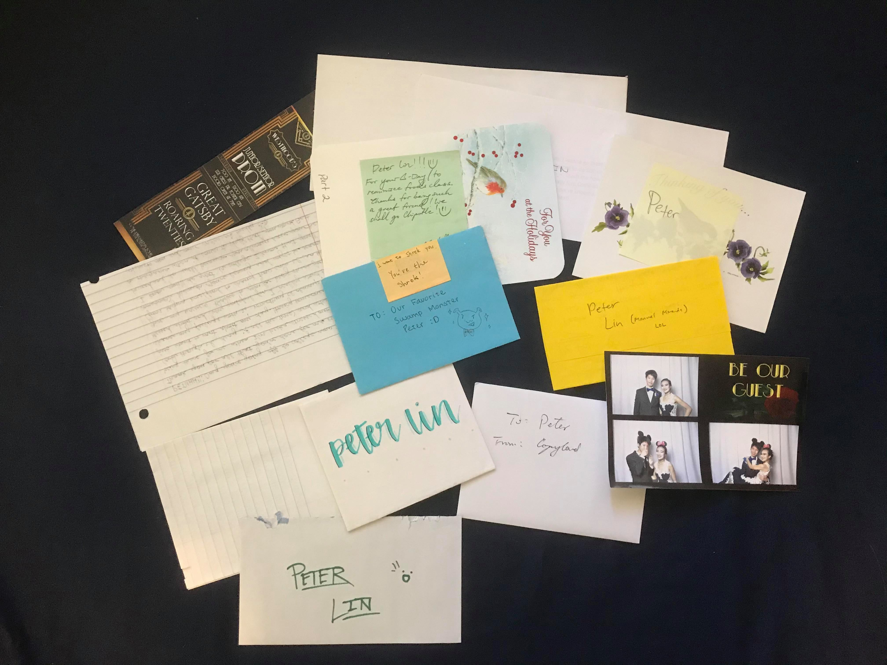
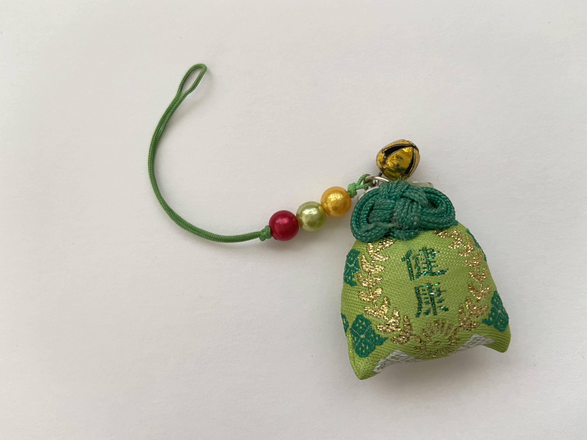
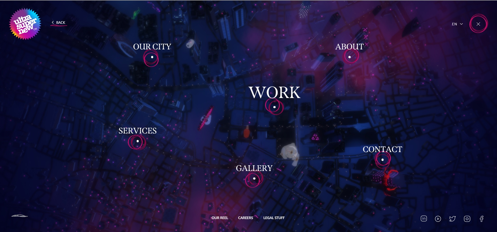

Shown below is a collection of letters, notes, and other things that I’ve received and kept over the years. Who are they from? What do they contain? These are questions that only I know the answer to. Every item holds a dear memory, and I could tell stories of the people or adventures that are associated with each one.
As part of my theme, a treasure trove of trinkets, for the Every Picture studio, this image showcases a sample of the items that I like to collect based on aesthetic and sentimental value. Just this one photo is evidence enough, but I am someone who values connections and interactions between people.

Peter Lin, 2021
Next is an image of a charm from Jenny, one of my group mates this quarter. The characters on the charm (I believe) represent good health, one of many types of charms that exist in multiple cultures. What’s interesting here is the plethora of motifs on the item. The green fabric with the leaf patterns suggest a nature motif, while the gold wreath and bell could represent multiple things, from longevity and peace to victory and freedom.
There are things that are noticeable, like the color and designs, but there are also things that we can’t tell just by looking. Where or who did Jenny get this from? Does it hold a special memory? Was it a souvenir from a trip or a gift? Just like the items in the previous photo, there’s probably a story connected to this item, as well as details that only Jenny would know and be able to share.

Jenny Wong, 2021
Website Images and Interactions
ultrasupernew mixes the background with images and interactive ability to create a unique experience that barrages the user with an evermoving scenery that emphasizes the company’s location base. Replacing a scrollable site with position-fixed text and sections, ultrasupernew instead has (most of) its content on one screen, with each page coming in and out of view depending on what link the user has clicked. Links are strategically placed as location markers over an image, which was very cool visual engagement.
One major downside to this site, however, is the sheer amount of resources required to load content, which will ruin the user experience on lower-end machines. Since the background is essentially a video instead of a still image, the site places an intense stress on the user’s loading capabilities, which will definitely produce lag if not sufficient enough.

ultrasupernew, 2021
Best Practices for Modals / Overlays / Dialog Windows
A few years ago, modals used to be the modern solution when wanting to show information that’s not relevant enough for its own page. It was an easy way to simplify the UI without taking up too much screen space. But now, without careful planning and its oversaturation, they have become something equivalent to the accused popup that many people tend to ignore.
It’s intriguing how, just like forms, the use of modals can be more damaging than effective if not done correctly. Many elements of modals seem to be easily harmful for accessibility, especially for mobile and visually impaired users. To that end, styling elements such as placing the modal within the top half of the screen, as well as adding descriptive titles are important steps for creating an effective modal.
Best Practices for Form Design
There is an obscene amount of forethought and research that goes into making an effective form. Many minute details, from hiding vs showing a password, to having friendly and clear feedback go into the process of making or breaking an online form. It's already interesting to note that there is no security benefit to forms hiding one’s password as bullets, but maybe it was originally intended for privacy in public spaces.
One site whose (checkout) form is extremely well done is Massdrop. Their input fields are set up to guide the user's eye to the next field as they fill out the form. Their checkout also features varying box sizes that signify fields with shorter inputs. Although the fields have inline labels, the labels move to the top part of the field once the user enters information, so it stays in sight.